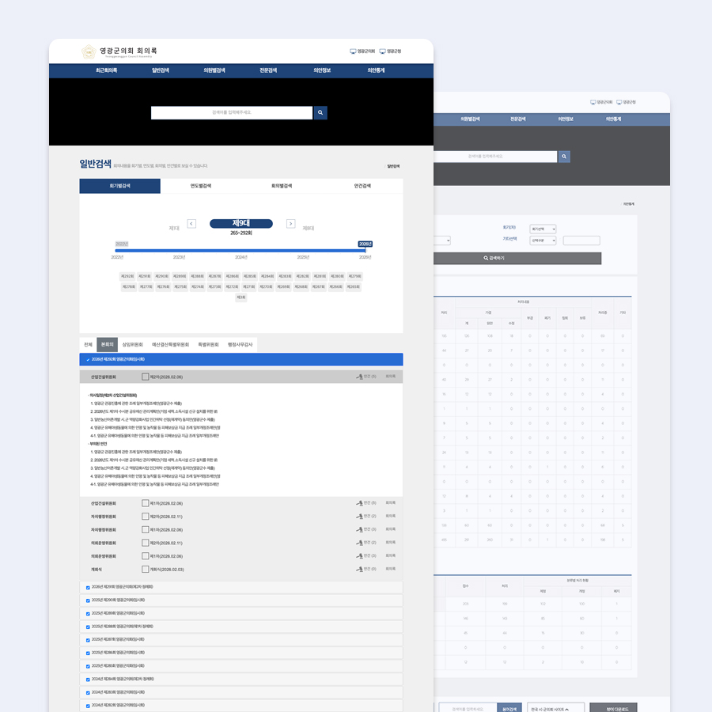

[UX/UI·웹퍼블리싱] 영광군의회 공식 홈페이지
영광군의회의 공식 홈페이지 구축 프로젝트로 의회 소개, 의원 미니홈페이지, 의회 회의록 정보 등
군의회의 주요 정보를 제공하는 공공기관 웹사이트입니다.
공공기관 사이트 특성을 고려하여 웹접근성과 사용자 편의성을 중심으로 설계했으며 홈페이지
기획, 디자인, 퍼블리싱 전 과정을 담당했습니다.
또한 구축 이후에도 장기간 유지보수를 맡아 콘텐츠 운영과 기능 개선을 지속적으로 수행했습니다.
Problem
지방의회 홈페이지는 시민들에게 의회 활동과 공공 정보를 전달하는 공공기관 웹사이트로서 일정한
UX/UI 기준을 준수해야 합니다.
따라서 기존 지방의회 사이트의 정보 구조와 기능에서 크게 벗어나지 않으면서 과도한 디자인 요소나
개성적인 표현보다는 공공기관 웹사이트에 적합한 안정적인 UI 구조와 가독성을 중심으로 설계해야
하는 제약이 있었습니다.
또한 의회 소개, 의원 정보, 의회 회의록 등 다양한 공공 정보를 누구나 쉽게 찾을 수 있도록
체계적인 정보 구조와 웹접근성을 고려한 사용자 중심 설계가 필요했습니다.
Approach
의회 홈페이지 이용 목적을 분석하여 시민들이 가장 많이 찾는 정보를 중심으로 정보 구조를
재정리했습니다.
의원 소개, 의회 활동, 의회 소식, 의회 회의록 등 핵심 콘텐츠를 명확하게 구분하여 직관적인
네비게이션 구조를 설계했습니다.
또한 각 의원의 활동 정보를 독립적으로 관리할 수 있도록 의원별 미니홈페이지 구조를
구축했습니다.
공공기관 사이트 기준에 맞춰 웹접근성 지침을 준수하며 디자인과 퍼블리싱을 진행했습니다.
Solution
- 영광군의회 홈페이지 정보 구조(IA) 설계
- 공공기관 웹사이트 UX/UI 디자인
- 반응형 웹 퍼블리싱
- 그누보드(PHP) 기반 홈페이지 구축
- PHP 기반 템플릿 구조 적용
- 웹 퍼블리싱 (HTML / CSS / JQuery / JS)
- 의원별 미니홈페이지 구조 설계 및 구현
- 의회 회의록 콘텐츠 페이지 구축
- 웹접근성 기준 준수 및 접근성 점수 승인
- 홈페이지 장기 유지보수 및 운영 관리
공공기관 홈페이지 특성에 맞춰 정보 접근성과 사용자 편의성을 고려하여 제작된 지방의회 공식 홈페이지 프로젝트입니다.
ROLE
UX/UI Designer / Web Publisher Website Planning · UI Design · Web Publishing Website Maintenance
PROJECT PERIOD
구축 : 2021.03 ~
운영 및 유지보수 : 2021.03 – 2024
Project link
Category
- UX/UI Design
- Web Design
- Web Publishing
- Public Institution Website
- Government Website
